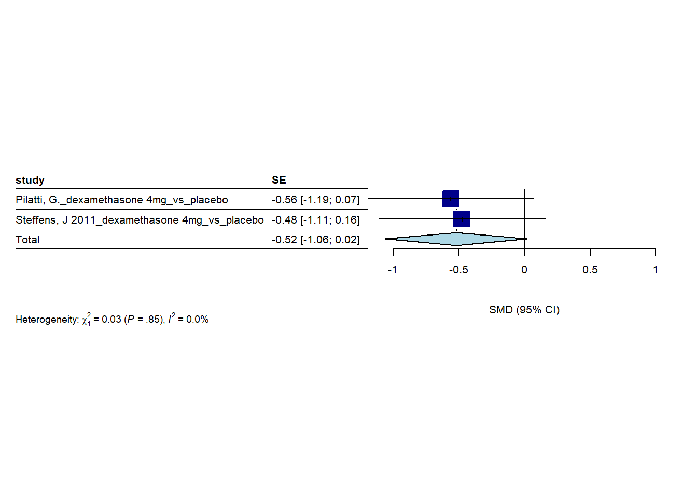
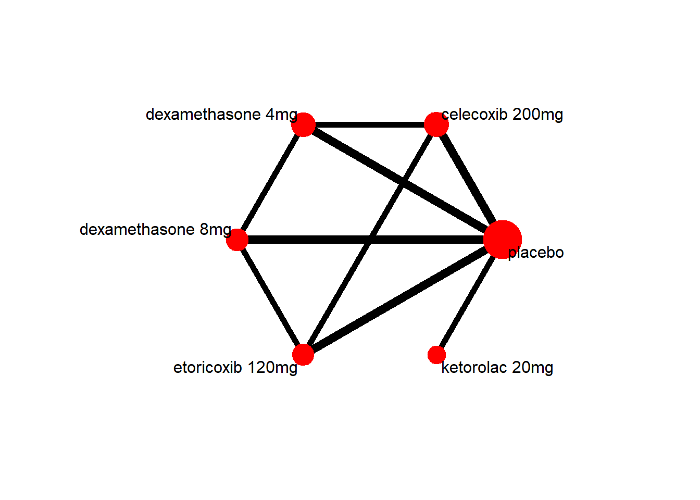
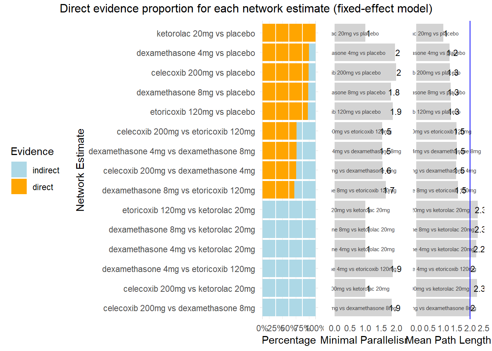

3 hours
2024-05-29
Last updated: 2024-05-30
Checks: 5 2
Knit directory: Collaborations/
This reproducible R Markdown analysis was created with workflowr (version 1.7.1). The Checks tab describes the reproducibility checks that were applied when the results were created. The Past versions tab lists the development history.
The R Markdown is untracked by Git. To know which version of the R
Markdown file created these results, you’ll want to first commit it to
the Git repo. If you’re still working on the analysis, you can ignore
this warning. When you’re finished, you can run
wflow_publish to commit the R Markdown file and build the
HTML.
Great job! The global environment was empty. Objects defined in the global environment can affect the analysis in your R Markdown file in unknown ways. For reproduciblity it’s best to always run the code in an empty environment.
The command set.seed(20210523) was run prior to running
the code in the R Markdown file. Setting a seed ensures that any results
that rely on randomness, e.g. subsampling or permutations, are
reproducible.
Great job! Recording the operating system, R version, and package versions is critical for reproducibility.
Nice! There were no cached chunks for this analysis, so you can be confident that you successfully produced the results during this run.
Using absolute paths to the files within your workflowr project makes it difficult for you and others to run your code on a different machine. Change the absolute path(s) below to the suggested relative path(s) to make your code more reproducible.
| absolute | relative |
|---|---|
| C:/Shengtong/Research/AllCollaboration/Collaborations/analysis/Rfunctions.R | analysis/Rfunctions.R |
Great! You are using Git for version control. Tracking code development and connecting the code version to the results is critical for reproducibility.
The results in this page were generated with repository version 92d73bb. See the Past versions tab to see a history of the changes made to the R Markdown and HTML files.
Note that you need to be careful to ensure that all relevant files for
the analysis have been committed to Git prior to generating the results
(you can use wflow_publish or
wflow_git_commit). workflowr only checks the R Markdown
file, but you know if there are other scripts or data files that it
depends on. Below is the status of the Git repository when the results
were generated:
Ignored files:
Ignored: .Rhistory
Ignored: analysis/.Rhistory
Ignored: analysis/2022_Mar2_Marinho_cache/
Untracked files:
Untracked: analysis/2023_0301_Christos_3hour.Rmd
Unstaged changes:
Modified: analysis/2023_0301_Christos.Rmd
Note that any generated files, e.g. HTML, png, CSS, etc., are not included in this status report because it is ok for generated content to have uncommitted changes.
There are no past versions. Publish this analysis with
wflow_publish() to start tracking its development.
Home
sample data
forest plot
3 hours - Studies per medication
dexamethasone 4mg
- random effect model
- fixed effect model

celecoxib 200mg
- random effect model
- fixed effect model
dexamethasone 8mg
- random effect model

- fixed effect model
etoricoxib 120mg
- random effect model
- fixed effect model
ketorolac 10mg
- random effect model
3 hours - Studies only with dexamethazone
- random effect model
- fixed effect model
3 hours - Sensitivity analysis
- random effect model
- fixed effect model
* raw difference -0.10
> -0.81*(9)^0.5*(-0.73+0.89)/3.92 [1] -0.09918367
network meta-analysis
random effect model
- overall comparison structure
- direct links mean there are direct comparison, otherwise indirect comparisons
- degree of thickness represents how often we find a specific comparison
- numbers on the edge indicate how many studies involve that comparison
- a mean path length > 2 means that a comparison estimate should be interpreted with particular caution.
P-score
ketorolac 10mg 0.8304
dexamethasone 8mg 0.6923
etoricoxib 120mg 0.6738
celecoxib 200mg 0.5628
dexamethasone 4mg 0.2370
placebo 0.0038
Q statistics to assess homogeneity / consistency
Q df p-value
Total 0.08 4 0.9993
Within designs 0.00 0 --
Between designs 0.08 4 0.9993
Between-designs Q statistic after detaching of single designs
(influential designs have p-value markedly different from 0.9993)
Detached design Q df p-value
placebo vs celecoxib 200mg vs dexamethasone 4mg 0.00 2 0.9981
placebo vs celecoxib 200mg vs etoricoxib 120mg 0.04 2 0.9809
placebo vs dexamethasone 4mg vs dexamethasone 8mg 0.06 2 0.9695
placebo vs dexamethasone 8mg vs etoricoxib 120mg 0.07 2 0.9678
Q statistic to assess consistency under the assumption of
a full design-by-treatment interaction random effects model
Q df p-value tau.within tau2.within
Between designs 0.08 4 0.9993 0 0- higher P-score, the better it is
fixed effect model
P-score
ketorolac 10mg 0.8304
dexamethasone 8mg 0.6923
etoricoxib 120mg 0.6738
celecoxib 200mg 0.5628
dexamethasone 4mg 0.2370
placebo 0.0038
Q statistics to assess homogeneity / consistency
Q df p-value
Total 0.08 4 0.9993
Within designs 0.00 0 --
Between designs 0.08 4 0.9993
Between-designs Q statistic after detaching of single designs
(influential designs have p-value markedly different from 0.9993)
Detached design Q df p-value
placebo vs celecoxib 200mg vs dexamethasone 4mg 0.00 2 0.9981
placebo vs celecoxib 200mg vs etoricoxib 120mg 0.04 2 0.9809
placebo vs dexamethasone 4mg vs dexamethasone 8mg 0.06 2 0.9695
placebo vs dexamethasone 8mg vs etoricoxib 120mg 0.07 2 0.9678
Q statistic to assess consistency under the assumption of
a full design-by-treatment interaction random effects model
Q df p-value tau.within tau2.within
Between designs 0.08 4 0.9993 0 0
sessionInfo()R version 4.3.2 (2023-10-31 ucrt)
Platform: x86_64-w64-mingw32/x64 (64-bit)
Running under: Windows 10 x64 (build 19045)
Matrix products: default
locale:
[1] LC_COLLATE=English_United States.utf8
[2] LC_CTYPE=English_United States.utf8
[3] LC_MONETARY=English_United States.utf8
[4] LC_NUMERIC=C
[5] LC_TIME=English_United States.utf8
time zone: America/Chicago
tzcode source: internal
attached base packages:
[1] grid stats graphics grDevices utils datasets methods
[8] base
other attached packages:
[1] dmetar_0.1.0 netmeta_2.9-0 meta_7.0-0
[4] metadat_1.2-0 VennDiagram_1.7.3 futile.logger_1.4.3
[7] condsurv_1.0.0 devtools_2.4.5 usethis_2.2.2
[10] tidycmprsk_1.0.0 gtsummary_1.7.2 ggsurvfit_1.0.0
[13] irr_0.84.1 lpSolve_5.6.20 readxl_1.4.3
[16] cowplot_1.1.2 matrixStats_1.2.0 gridExtra_2.3
[19] DT_0.31 rstatix_0.7.2 ggpubr_0.6.0
[22] kableExtra_1.3.4 lubridate_1.9.3 forcats_1.0.0
[25] stringr_1.5.1 dplyr_1.1.4 purrr_1.0.2
[28] readr_2.1.4 tidyr_1.3.0 tibble_3.2.1
[31] ggplot2_3.4.4 tidyverse_2.0.0
loaded via a namespace (and not attached):
[1] mathjaxr_1.6-0 rstudioapi_0.15.0 jsonlite_1.8.8
[4] magrittr_2.0.3 modeltools_0.2-23 farver_2.1.1
[7] nloptr_2.0.3 rmarkdown_2.25 fs_1.6.3
[10] vctrs_0.6.5 memoise_2.0.1 minqa_1.2.6
[13] CompQuadForm_1.4.3 webshot_0.5.5 htmltools_0.5.7
[16] lambda.r_1.2.4 broom_1.0.5 cellranger_1.1.0
[19] sass_0.4.8 bslib_0.6.1 htmlwidgets_1.6.4
[22] poibin_1.5 futile.options_1.0.1 cachem_1.0.8
[25] gt_0.10.0 mime_0.12 lifecycle_1.0.4
[28] pkgconfig_2.0.3 Matrix_1.6-1.1 R6_2.5.1
[31] fastmap_1.1.1 shiny_1.8.0 magic_1.6-1
[34] digest_0.6.33 numDeriv_2016.8-1.1 colorspace_2.1-0
[37] rprojroot_2.0.4 pkgload_1.3.3 crosstalk_1.2.1
[40] labeling_0.4.3 fansi_1.0.6 timechange_0.2.0
[43] httr_1.4.7 abind_1.4-5 compiler_4.3.2
[46] remotes_2.4.2.1 withr_2.5.2 backports_1.4.1
[49] metafor_4.4-0 carData_3.0-5 pkgbuild_1.4.3
[52] highr_0.10 ggsignif_0.6.4 MASS_7.3-60
[55] sessioninfo_1.2.2 tools_4.3.2 prabclus_2.3-3
[58] httpuv_1.6.13 nnet_7.3-19 glue_1.6.2
[61] nlme_3.1-163 promises_1.2.1 cluster_2.1.4
[64] generics_0.1.3 gtable_0.3.4 tzdb_0.4.0
[67] class_7.3-22 hms_1.1.3 flexmix_2.3-19
[70] xml2_1.3.6 car_3.1-2 utf8_1.2.4
[73] ggrepel_0.9.4 pillar_1.9.0 later_1.3.2
[76] robustbase_0.99-2 splines_4.3.2 lattice_0.21-9
[79] survival_3.5-7 tidyselect_1.2.0 miniUI_0.1.1.1
[82] knitr_1.45 git2r_0.33.0 svglite_2.1.3
[85] stats4_4.3.2 xfun_0.41 diptest_0.77-0
[88] DEoptimR_1.1-3 MuMIn_1.47.5 stringi_1.8.3
[91] workflowr_1.7.1 yaml_2.3.8 boot_1.3-28.1
[94] evaluate_0.23 kernlab_0.9-32 cli_3.6.2
[97] xtable_1.8-4 systemfonts_1.0.5 munsell_0.5.0
[100] jquerylib_0.1.4 Rcpp_1.0.11 parallel_4.3.2
[103] ellipsis_0.3.2 mclust_6.0.1 profvis_0.3.8
[106] urlchecker_1.0.1 lme4_1.1-35.1 viridisLite_0.4.2
[109] broom.helpers_1.14.0 scales_1.3.0 fpc_2.2-11
[112] rlang_1.1.2 rvest_1.0.3 formatR_1.14